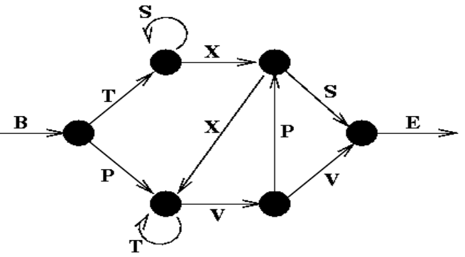

About Funktion dieser Website ist es die Projekte des Moduls Technische Informatik der Beuth Hochschule für Technik Berlin zu präsentieren. Dies dient dazu, neben den Kurs-Unterlagen, das gelernte praktisch anzuwenden und zu sehen wie es in der praxis funktioniert. Die Projekte werden bearbeitet von Nakato Musisi.
Projektaufgabe I DEA/NEA: Simulation und visualisierung eines Nicht-Deterministischen Endlichen Automaten. Abgabe: Montag der 10. Mai 2021 um 08:00Uhr Aufgabenbeschreibung Zum Simulator
DEA

Bei dieser Augabe soll ein deterministisch endlicher Automat erzeugt werden. Der Automat soll prüfen ob ein gebenes Wort in der zu unetruschenden Sprache existiert. Untersucht wird der Reber Grammer (RG). Er wird als Tabelle wie auch als Graph visualisiert. Der RG besteht aus den Buchstaben B / T / S / P / X / V / E, wobei B den Start der Buchstabenfolge repräsentiert und E das Ende.
Aufgabenstellung
1. Der Simulator soll in der Lage sein zufällige Zeichenketten zu generieren und dabei
zwischen korrekten und falschen Zeichenketten zu unterschieden.
2. Es soll möglich sein eine korrekte Zeichenkette zu modifizieren, indem eine korrekte Kante durch
eine nichtexistente falsche Kante ersetzt wird.
3. Eingaben sollen schrittweise oder automatisch animiert verarbeitet werden können. Dabei ist die Animationsgeschwindigkeit einstellbar.